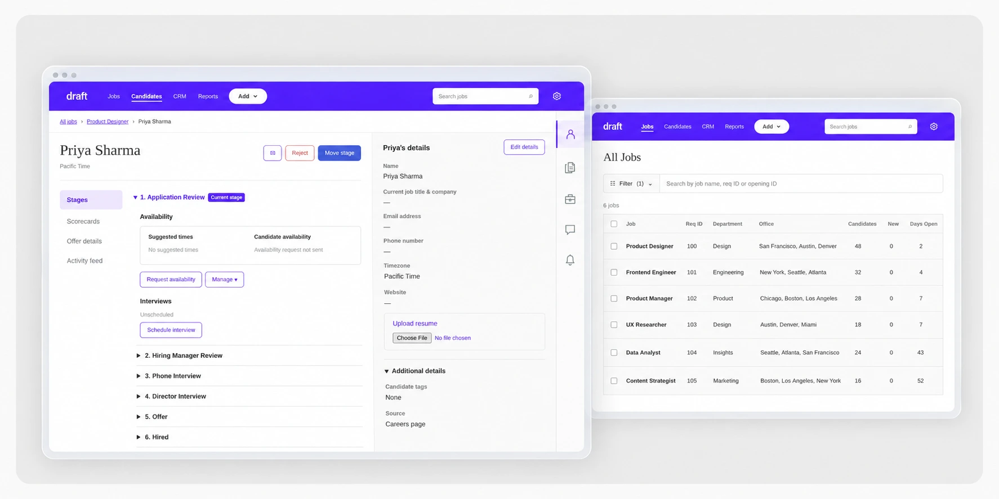
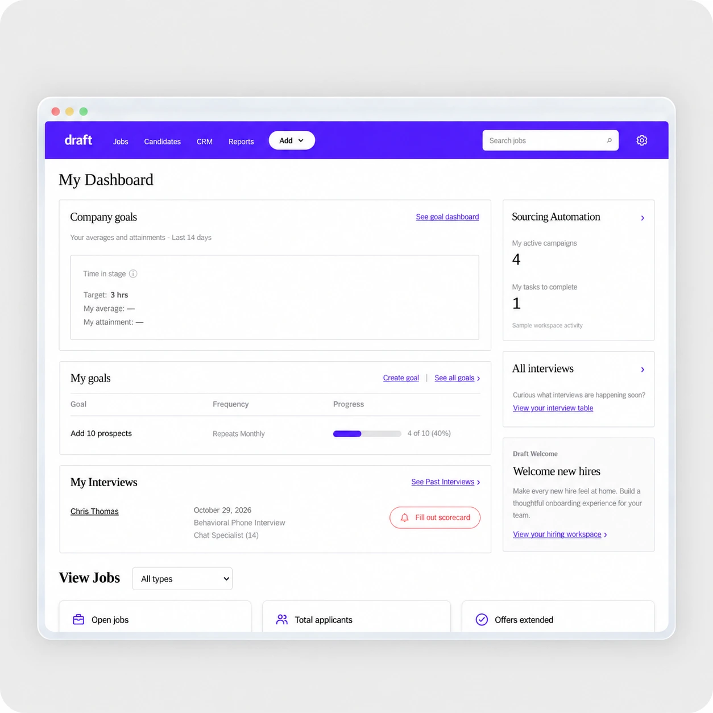
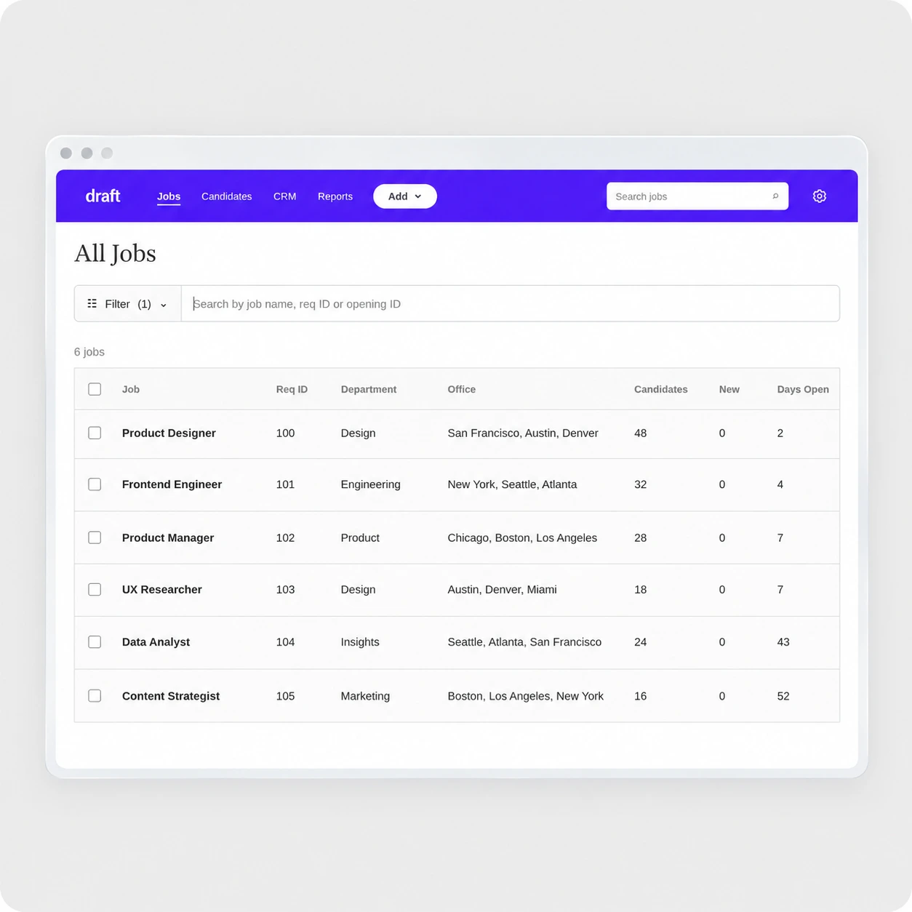

RECRUITING WORKSPACE · PRODUCT DESIGN
Draft
Bringing clarity to the hiring process.
Hiring is a sequence of decisions shared across recruiters, hiring managers, and interviewers. Draft brings the work around those decisions into one workspace: setting up a role, reviewing candidates, coordinating interviews, and understanding hiring activity.
- Role
- Lead Product Designer
- Project
- 2025–2026
- Scope
- Workflow design, interface design, interaction prototyping, branding

The challenge
A hiring workflow extends far beyond a candidate list. Teams need to agree on a role, assign responsibility, define interviews, track applications, and follow up. When those tasks feel disconnected, it becomes harder to understand what has been completed and what should happen next.
I explored how an applicant tracking system could make that structure easier to navigate without hiding the detail recruiters need.
Outcome
A working browser prototype connecting a dashboard, jobs workspace, job setup, candidate profiles, interview table, and reporting views. The result demonstrates a coherent hiring journey with editable records, filtering, and clear navigation.
This is a design prototype. Changes save locally in the browser. Live recruiting integrations, team permissions, email delivery, and hiring performance outcomes have not been validated.
My contribution
I translated complex recruiting workflows into page structures, navigation patterns, and interactive screens. I designed the Draft identity, built the prototype, and refined hierarchy, spacing, controls, and interaction states across the workspace.
The work evolved from Talentora’s earlier AI interviewing exploration into a broader recruiting experience. Draft focuses on the operational context around interviews and the people responsible for moving hiring forward.
01 / WORKSPACE
Start with the work that needs attention.
The dashboard brings goals, upcoming interviews, and workspace activity together. A recruiter can move from a high-level overview into the jobs or interview table, rather than treating each feature as a separate starting point.

Design decision
I used a serif heading to give the workspace a distinct voice, while keeping dense operational information in a familiar sans serif. Purple identifies navigation and actions; restrained grey surfaces keep the content readable.
02 / JOBS
Find the role. Then understand its setup.
All Jobs provides a consistent list of roles, requisition IDs, departments, offices, and candidate counts. A single Filter control groups job status, department, and office, with search directly beside it.
Inside a job, the main navigation supports ongoing hiring activity. Selecting Job Setup replaces that navigation with the setup steps, with a Back control to return. This gives configuration its own space while keeping it connected to the role.

Make responsibility visible
Hiring Team identifies managers, recruiters, coordinators, and sourcers, with editing available beside each role.
Reveal detail when needed
Job Info expands to show additional information and openings. Opening management supports editing records without leaving the job.
03 / CANDIDATES
Keep the candidate and the next step in view.
The candidate workspace separates the hiring journey from supporting information. Stages, scorecards, offers, and activity stay on the left; a right-side panel holds profile and application details.
The icon rail switches between supporting views. Selecting an active icon closes the panel, giving the main workflow more room. This balances access to detail with the space needed to review an application.
Design decision
I kept stage progression and candidate details in the same context. A recruiter should be able to check contact information or documents while understanding where the candidate sits in the process.
04 / AI EXPERIENCE
Give AI a defined role in the workflow.
Draft grew from an exploration of AI-supported interviews. As the workspace expanded, the design question became more specific: where could assistance reduce preparation work without obscuring a recruiter’s judgment?
The interview sandbox explores a review loop: select a role, generate proposed questions, and like or dislike them before using them. This keeps preparation reviewable instead of treating generated output as a final hiring decision.
Prototype boundary
The sandbox demonstrates the interaction with simulated questions. It is not a validated AI screening or assessment system. Production work would need grounded question generation, clear provenance, privacy safeguards, and evaluation for job relevance and fairness.
05 / COMPONENTS
Build consistency into the details.
Navigation with clear state
Underlined top tabs, selected sidebar items, and a consistent Back pattern make location visible across the workspace.
Progressive disclosure
Expandable filters, setup navigation, candidate panels, and stage sections keep secondary details available on demand.
Editable records
Hiring-team assignments, job details, openings, and candidate information use contextual controls and local saving.
Semantic feedback
Green identifies open status and referrals; purple marks interaction; recommendation and task states use explicit labels alongside color.
06 / PROTOTYPE LIBRARY
Follow the experience.
REFLECTION
Clarity comes from the connections.
The strongest improvement was connecting the workflow: a role leads to its setup, its candidates, and the next action. Individual screens become more useful when their relationships are clear.
What I would validate next
I would test three tasks with recruiters and hiring managers: configure a role and assign its team; find a candidate and identify the next action; and locate the information needed to prepare an interview. I would track task completion, wrong turns, and confidence in the next step before claiming efficiency gains.
Further work would connect shared data, permissions, calendar and email services, and real reporting. The current prototype establishes the interaction model; those integrations and usability findings would determine what becomes production-ready.